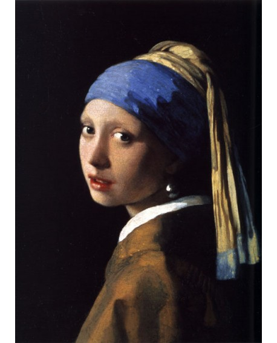
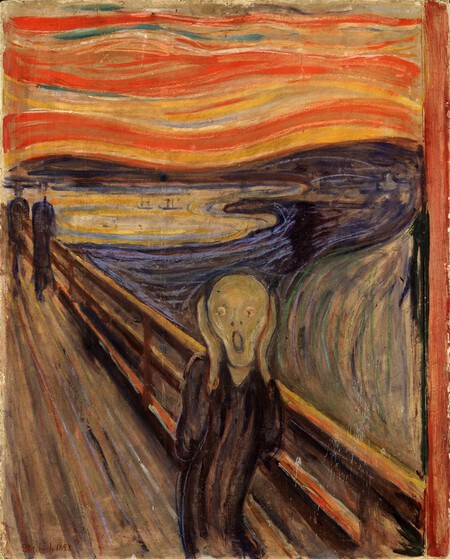
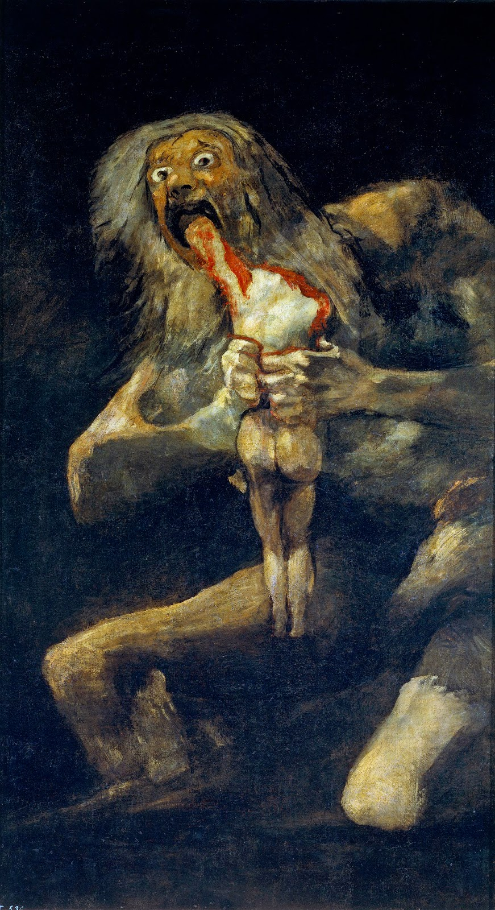
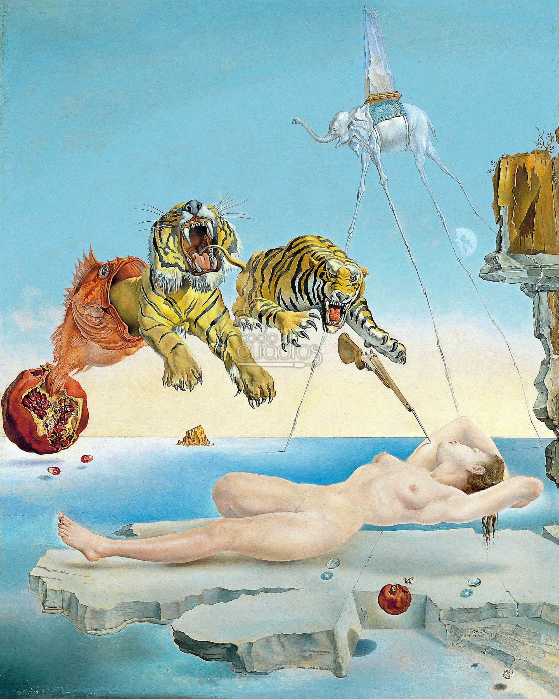
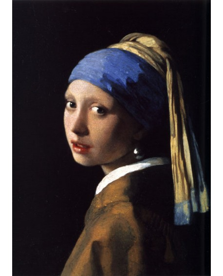
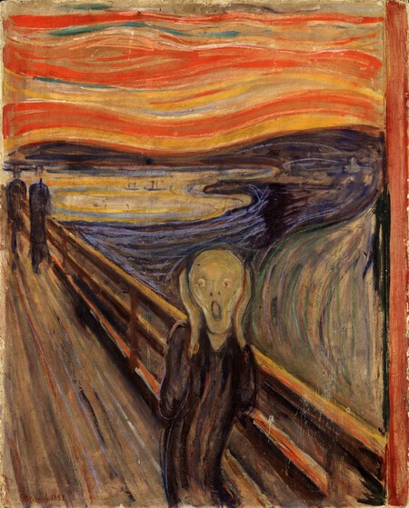
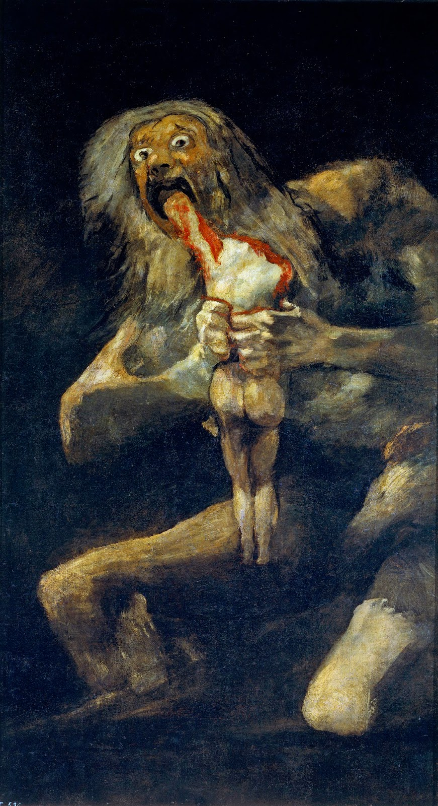
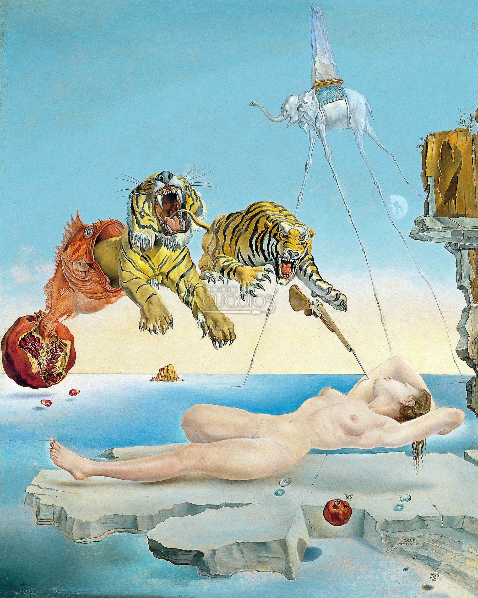

| Day | Painting | Facts |
|---|---|---|
| Monday | Monalisa: |
The Monalisa is a famous painting painted by Leonardo da Vinci between 1504 and 1519. However, it was not until the last century that it became popular and not in a good way since in 1911 it was stolen from the Louvre Museum causing the closure of the museum for a while. |
| Tuesday | Girl with a Pearl Earring:  |
Girl with a Pearl Earring was painted by Johannes Vermeer. A curious fact about this painting is that it is not a portrait, in the strict sense of the term. Within the Dutch Flemish Baroque, there was a type of work known as tronie, that is, "face" in Dutch, and which are characterized by being small paintings, which usually evoke a face, an expression or attitude, but always of someone unknown.. |
| Wednesday | The Sceam:  |
The Scream was painted by Edvard Munch in 1893. The scream has been a great inspiration for popular culture. The most notorious of these is the Ghostface mask, which covers the faces of the various killers in the Scream saga. Also, again speaking of theft, it is one of the most stolen paintings in history. |
| Thursday | Saturn Devouring His Son:  |
Saturn Devouring His Son is a painting by Spanish artist Francisco Goya. TThe specific subject of the painting is not known. It has been related to Saturn, the Latin god often associated with the Greek titan Cronus. According to mythological accounts, Saturn was not supposed to have children, so he devoured them at birth. |
| Friday | Las Meninas: |
Las Meninas is a 1656 painting in the Museo del Prado in Madrid, by Diego Velázquez, the leading artist of the Spanish Golden Age. Of the curious facts about Diego Velázquez we find that he is a polemic painter and never remained silent, the painter strongly expresses his complaints about the conditions prevailing in Spain. These complaints almost made him not to continue his famous work. |
| Saturday | The kiss: |
The Kiss is an oil-on-canvas painting by the Austrian Symbolist painter Gustav Klimt and it was painted at some point in 1907 and 1908. How do you buy an unfinished work of art? You must make an offer that cannot be refused. To acquire this momentous work of art, the Belvedere paid 25,000 crowns (or approximately $240,000 in today's dollars). Prior to this mammoth sale, the highest price paid for a painting in Austria was relatively insignificant, about 500 crowns. |
| Sunday | Dream Caused by the Flight of a Bee:  |
Dream Caused by the Flight of a Bee Around a Pomegranate a Second Before Awakening is a surrealist painting by Salvador Dalí. The painter wanted to illustrate one of the discoveries of the famous author of psychoanalysis, Sigmund Freud, concerning the mechanism of dreams, the fact that sometimes stimuli derived from external events are introduced into the dream, which are immediately integrated into it with absolute coherence. |